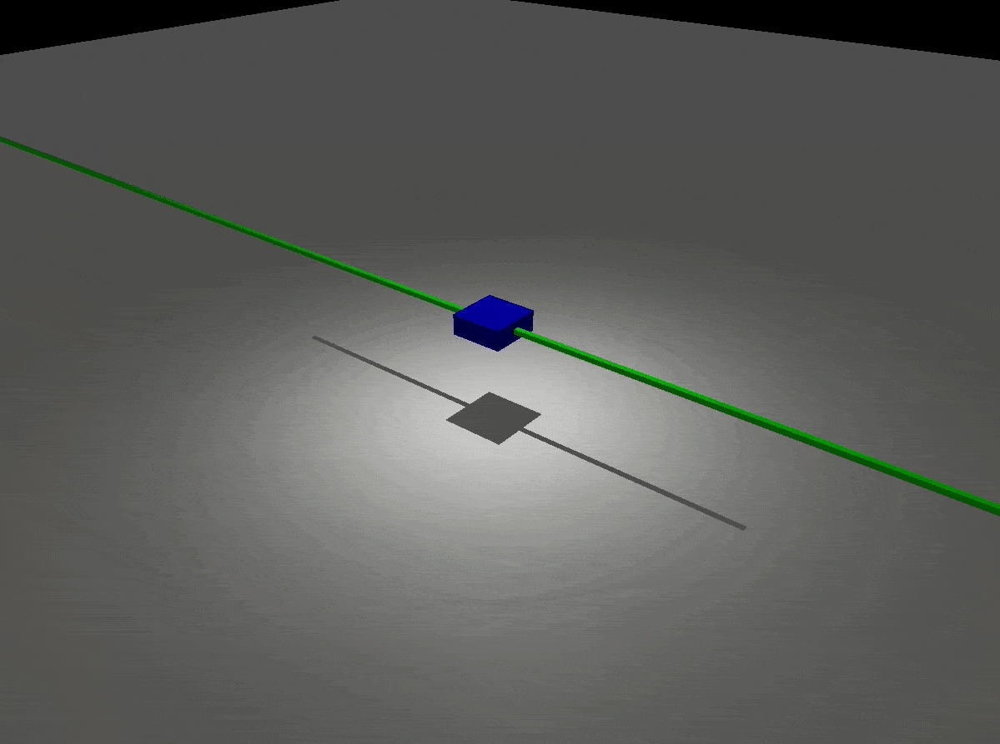
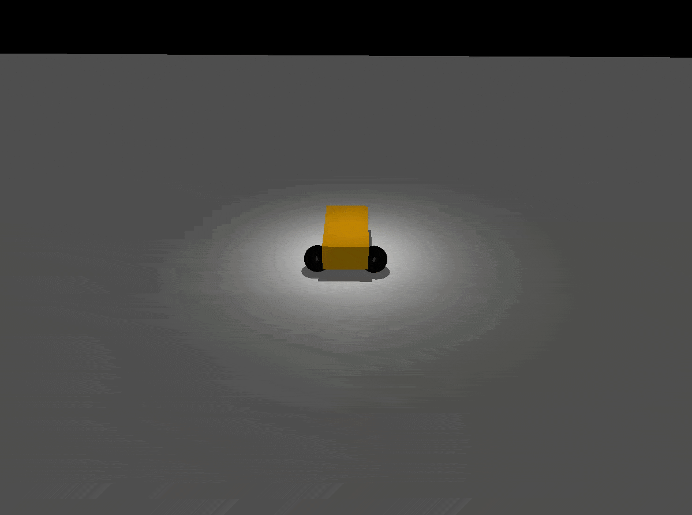

mujoco_ros2_control
These are the basic examples of using Mujoco with ROS2.
 Usage
ros2_control tag in URDF
Use mujoco_ros2_control/MujocoSystem for plugin
<ros2_control name="MujocoSystem" type="system">
<hardware>
<plugin>mujoco_ros2_control/MujocoSystem</plugin>
</hardware>
<joint name="slider_to_cart">
<command_interface name="position">
<param name="min">-15</param>
<param name="max">15</param>
</command_interface>
<state_interface name="position">
<param name="initial_value">1.0</param>
</state_interface>
<state_interface name="velocity"/>
<state_interface name="effort"/>
</joint>
<sensor name="cart_imu">
<state_interface name="orientation.x"/>
<state_interface name="orientation.y"/>
<state_interface name="orientation.z"/>
<state_interface name="orientation.w"/>
<state_interface name="angular_velocity.x"/>
<state_interface name="angular_velocity.y"/>
<state_interface name="angular_velocity.z"/>
<state_interface name="linear_acceleration.x"/>
<state_interface name="linear_acceleration.y"/>
<state_interface name="linear_acceleration.z"/>
</sensor>
<sensor name="motor_fts">
<state_interface name="force.x"/>
<state_interface name="force.y"/>
<state_interface name="force.z"/>
<state_interface name="torque.x"/>
<state_interface name="torque.y"/>
<state_interface name="torque.z"/>
<param name="frame_id">motor_fts</param>
</sensor>
</ros2_control>
Convert URDF model to XML
URDF models must be converted to MJCF XML files.
Make sure to use the same name for the link and joint, which are mapped to the body and joint in Mujoco.
You need to specify <limit> which is mapped to range in MJCF.
For now, there is no way to specify velocity or acceleration limit.
For an IMU sensor, we add framequat, gyro, and accelerometer sensors in the MJCF since there is no combined IMU in MuJoCo.
The name of each sensor should be sensor_name + _quat, sensor_name + _gyro, and sensor_name + _accel respectively.
For a force torque sensor, we map both a force sensor and a torque sensor in the MJCF since there is no combined force torque sensor in MuJoCo.
The name of each sensor should be sensor_name + _force and sensor_name + _torque.
For example, if you have a force torque sensor called my_sensor, you need to create my_sensor_force and my_sensor_torque in MJCF.
The drivers additionally support simulated RGB-D cameras for publishing simulated color images and depth maps.
Cameras must be given a name and be attached to a joint called <name>_optical_frame.
The camera_info, color, and depth images will be published to topics called <name>/camera_info,
<name>/color, and <name>/depth, repectively.
Also note that MuJuCo’s conventions for cameras are different than ROS’s, and which must be accounted for.
An overview is available through the “camera” demo.
For additional information refer to the mujoco_ros2_control_demos/mujoco_models for examples.
Specify the location of Mujoco models and the controller configuration file
You need to pass parameters for paths as shown in the following example.
controller_config_file = os.path.join(mujoco_ros2_control_demos_path, 'config', 'cartpole_controller_position.yaml')
node_mujoco_ros2_control = Node(
package='mujoco_ros2_control',
executable='mujoco_ros2_control',
output='screen',
parameters=[
robot_description,
controller_config_file,
{'mujoco_model_path':os.path.join(mujoco_ros2_control_demos_path, 'mujoco_models', 'test_cart_position.xml')}
]
)